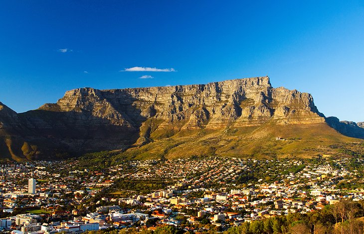

Botanical Gardens
Kirstenbosch Botanical Gardens are part of the Cape Floristic Region UNESCO World Heritage site. The site was bequeathed to the state by Cecil Rhodes in 1902 and the gardens were established in 1913 to preserve the country's indigenous flora-one of the first botanical gardens in the world with this mission

Table Mountain
The park protects an astounding diversity of plants and more than 1,470 flower species-the planet's richest floral kingdom-as well as animals such as cute snub-nosed dassies (rock hyraxes), caracals, and baboons.

Clifton and Camps Bay Beaches
About six kilometers from the city center, the beaches of Camps Bay and Clifton lure the buff, the bronzed, and the beautiful-as well as the big bucks.
Robben Island
For nearly 400 years, Robben Island in Table Bay, was a brutal prison where Nelson Mandela spent 18 years in a tiny cell during the apartheid era.

Signal Hill and the Noon Gun
Five minutes drive west of the city center, Signal Hill offers stunning views over Cape Town, Table Bay, and the glittering Atlantic Ocean from its 350-meter summit.
Great White Shark Cage Dives
In the chilly waters off Cape Town's coast, thrill seekers can come face-to-face with one of the ocean's most feared predators:
great white sharks.
The Victoria & Alfred Waterfront
Stretching around two harbor basins, the Victoria and Alfred Waterfront is a buzzing entertainment quarter reminiscent of Fisherman's Wharf in San Francisco.